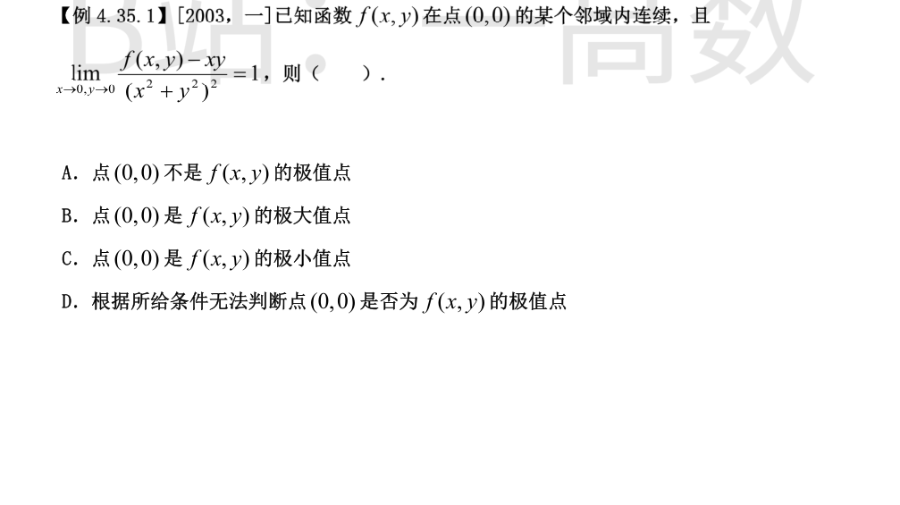
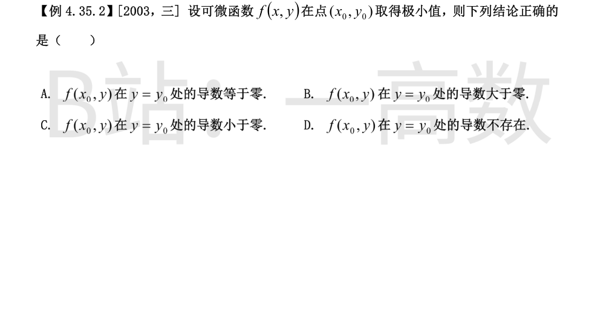
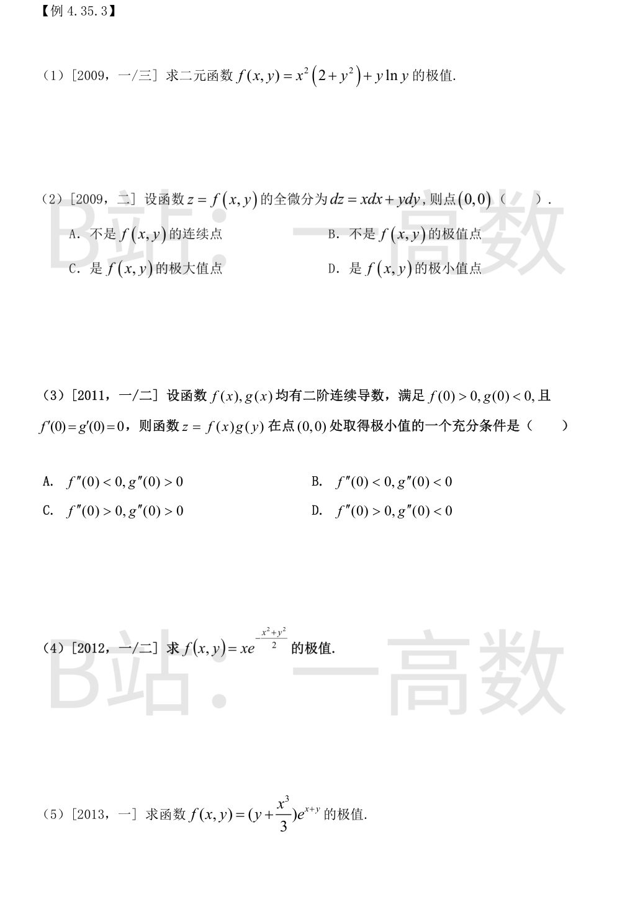
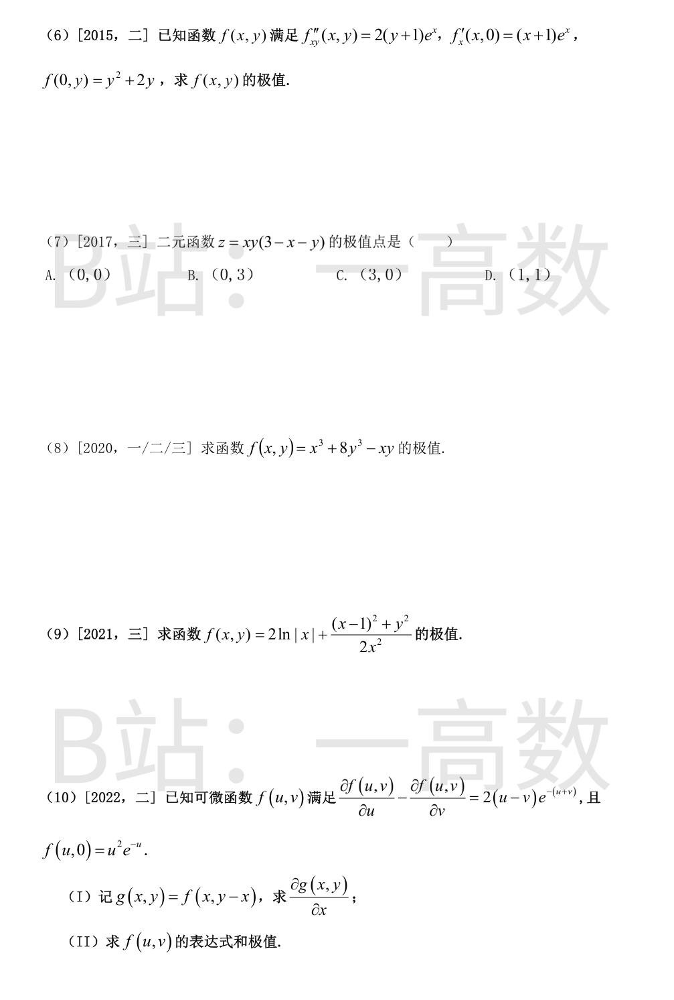
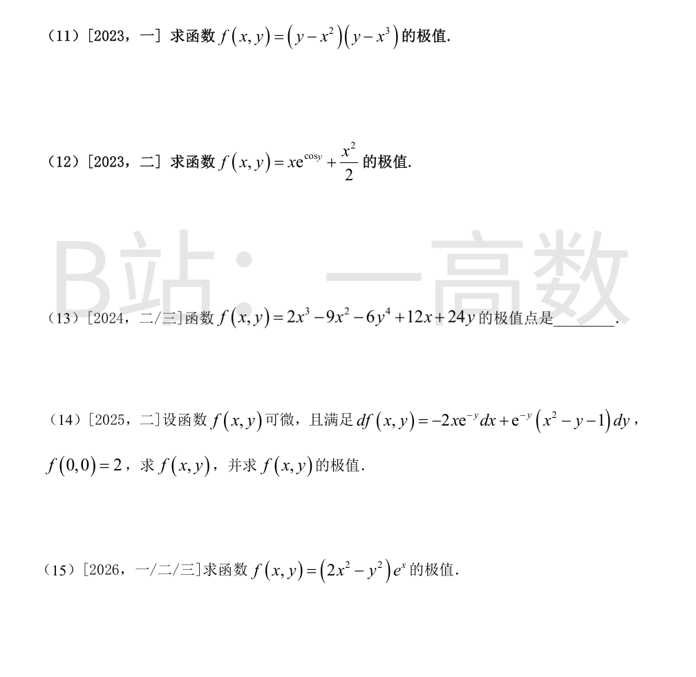
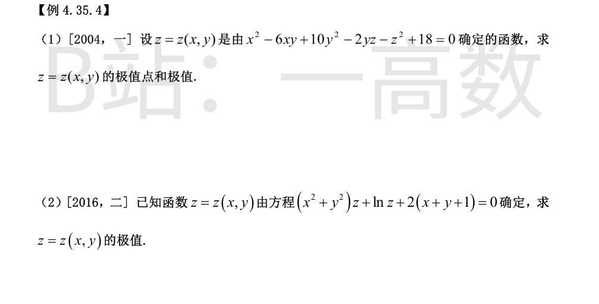
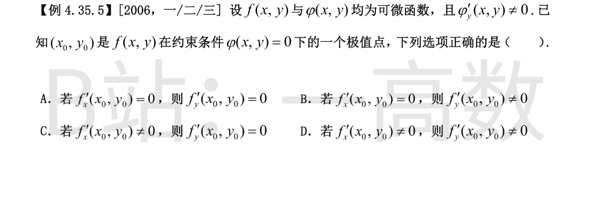
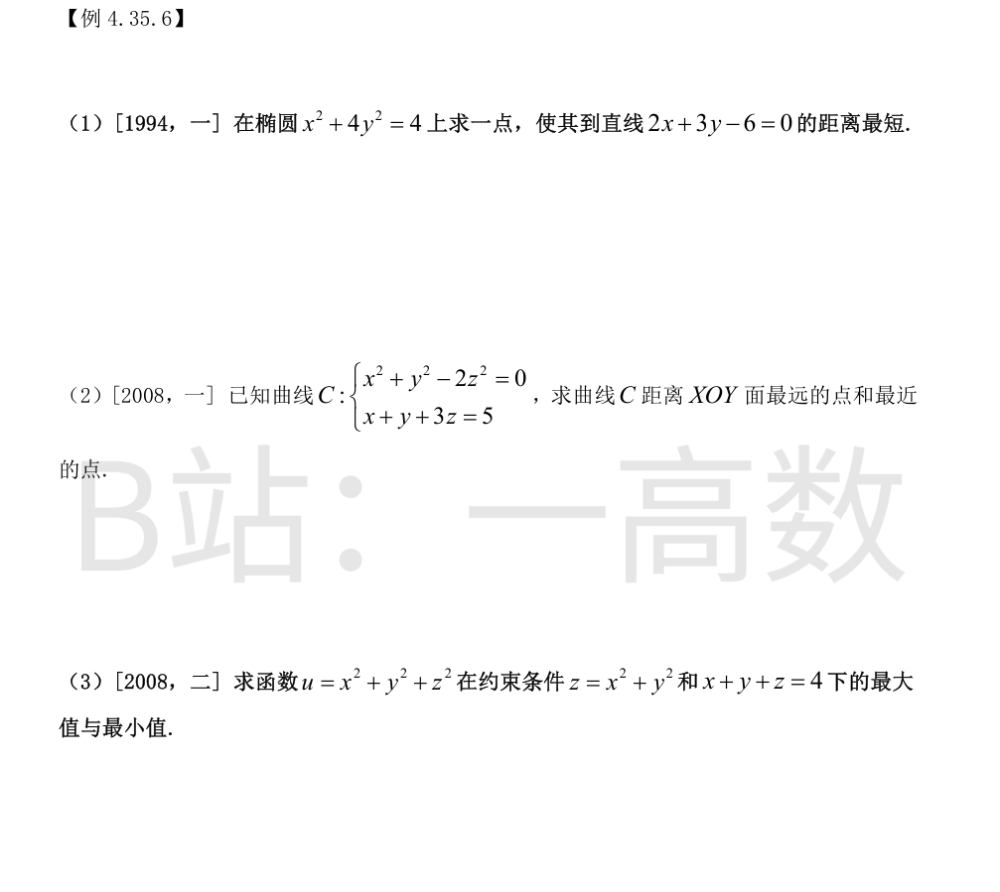
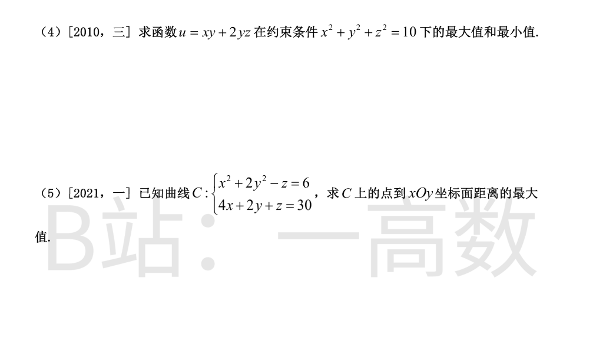
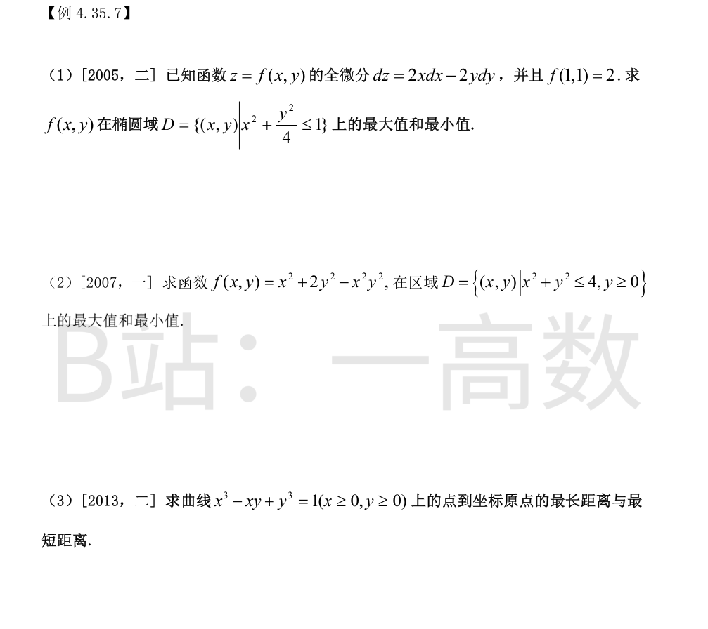

由极限条件，在 $(0,0)$ 充分小的邻域内
$$f(x,y)=xy+(x^2+y^2)^2\,(1+o(1))$$
由连续性 $f(0,0)=\lim f(x,y)=0$。
沿直线 $y=x$：$f(t,t)=t^2+4t^4+o(t^4)>0\ (t\to0,\ t\neq0)$；
沿直线 $y=-x$：$f(t,-t)=-t^2+4t^4+o(t^4)<0$（$|t|$ 充分小时 $-t^2$ 项主导）。
即在 $(0,0)$ 的任何小邻域内 $f$ 既有正值又有负值，而 $f(0,0)=0$，故 $(0,0)$ 不是极值点。选 A。

考虑一元函数 $g(y)=f(x_0,y)$。因 $f$ 可微，$g'(y_0)=f_y(x_0,y_0)$ 存在。
$f$ 在 $(x_0,y_0)$ 取极小值 $\Rightarrow$ $g(y)$ 在 $y_0$ 取极小值。由 Fermat 引理（$g$ 可导且取极值）：
$$g'(y_0)=f_y(x_0,y_0)=0$$
故选 A。



$$f_x=2x(2+y^2),\qquad f_y=2x^2y+\ln y+1$$
令 $f_x=0\Rightarrow x=0$；代入 $f_y=0$：$\ln y+1=0\Rightarrow y=e^{-1}$。唯一驻点 $\left(0,\dfrac1e\right)$。
$$A=f_{xx}=2(2+y^2)\Big|_{(0,1/e)}=4+\frac{2}{e^2}>0,\qquad B=f_{xy}=4xy\Big|_{(0,1/e)}=0,\qquad C=f_{yy}=2x^2+\frac1y\Big|_{(0,1/e)}=e$$
$AC-B^2=e\left(4+\dfrac{2}{e^2}\right)>0$ 且 $A>0$，故为极小值点。
$$f\left(0,\frac1e\right)=0+\frac1e\ln\frac1e=-\frac1e$$
（定义域要求 $y>0$，边界 $y\to0^+$ 时 $y\ln y\to0$、$y\to+\infty$ 时 $f\to+\infty$，无极大值。）
由 $dz=x\,dx+y\,dy$ 得 $f_x=x,\ f_y=y$，从而 $f_{xx}=1,\ f_{yy}=1,\ f_{xy}=0$（处处成立，故 $f$ 二阶可导、连续）。
$(0,0)$ 是驻点，且
$$A=f_{xx}(0,0)=1>0,\quad B=0,\quad C=1,\qquad AC-B^2=1>0$$
故 $(0,0)$ 是极小值点。选 D。
$z_x=f'(x)g(y),\ z_y=f(x)g'(y)$，$(0,0)$ 是驻点。
$$A=z_{xx}=f''(0)g(0),\qquad B=z_{xy}=f'(0)g'(0)=0,\qquad C=z_{yy}=f(0)g''(0)$$
极小值充分条件：$AC-B^2>0$ 且 $A>0$、$C>0$。
$A=f''(0)g(0)>0$，由 $g(0)<0$ 需 $f''(0)<0$；
$C=f(0)g''(0)>0$，由 $f(0)>0$ 需 $g''(0)>0$。
即 $f''(0)<0,\ g''(0)>0$，选 A。
$$f_x=(1-x^2)e^{-\frac{x^2+y^2}{2}},\qquad f_y=-xye^{-\frac{x^2+y^2}{2}}$$
令二者为零：$x=\pm1,\ y=0$，驻点 $(1,0),\ (-1,0)$。
$$f_{xx}=(x^3-3x)e^{-\frac{r^2}{2}},\qquad f_{xy}=-y(1-x^2)e^{-\frac{r^2}{2}},\qquad f_{yy}=x(y^2-1)e^{-\frac{r^2}{2}}$$
在 $(1,0)$：$A=-2e^{-1/2}<0,\ B=0,\ C=-e^{-1/2}$，$AC-B^2=2e^{-1}>0$，极大值点，$f(1,0)=e^{-1/2}$。
在 $(-1,0)$：$A=2e^{-1/2}>0,\ B=0,\ C=e^{-1/2}$，$AC-B^2=2e^{-1}>0$，极小值点，$f(-1,0)=-e^{-1/2}$。
记 $g=y+\dfrac{x^3}{3}$，则 $f=ge^{x+y}$，$g_x=x^2,\ g_y=1$。
$$f_x=(x^2+g)e^{x+y},\qquad f_y=(1+g)e^{x+y}$$
令二者为零：$x^2+g=0$ 与 $1+g=0$ 相减得 $x^2-1=0\Rightarrow x=\pm1$。
$x=1$：$g=1+y+\frac13=0\Rightarrow y=-\frac43$，得 $P_1=\left(1,-\frac43\right)$；
$x=-1$：$g=1+y-\frac13=0\Rightarrow y=-\frac23$，得 $P_2=\left(-1,-\frac23\right)$。
二阶导：
$$f_{xx}=(2x+2x^2+g)e^{x+y},\qquad f_{xy}=(1+g)e^{x+y},\qquad f_{yy}=(2+g)e^{x+y}$$
在 $P_1$：$g=\frac13-\frac43=-1$，$A=2+2-1=3>0,\ B=1+g=0,\ C=2-1=1$，$AC-B^2=3>0$，极小值点：
$$f\left(1,-\frac43\right)=\left(-\frac43+\frac13\right)e^{-1/3}=-e^{-1/3}$$
在 $P_2$：$g=-\frac23-\frac13=-1$，$A=-2+2-1=-1<0,\ B=0,\ C=1$，$AC-B^2=-1<0$，非极值点。
故只有极小值 $-e^{-1/3}$。
由 $f_{xy}=2(y+1)e^x$ 对 $y$ 积分：$f_x=(y+1)^2e^x+\varphi(x)$。
代入 $f_x(x,0)=e^x+\varphi(x)=(x+1)e^x$ 得 $\varphi(x)=xe^x$。故
$$f_x=(y+1)^2e^x+xe^x$$
对 $x$ 积分（$\int xe^xdx=(x-1)e^x$）：
$$f=(y+1)^2e^x+(x-1)e^x+\psi(y)$$
由 $f(0,y)=(y+1)^2-1+\psi(y)=y^2+2y+\psi(y)=y^2+2y$ 得 $\psi(y)=0$。于是
$$f(x,y)=e^x\left[(y+1)^2+x-1\right]$$
$$f_x=e^x\left[(y+1)^2+x\right],\qquad f_y=2(y+1)e^x$$
令为零：$y=-1,\ x=0$，唯一驻点 $(0,-1)$。
$$A=f_{xx}=e^x\left[(y+1)^2+x+1\right]\Big|_{(0,-1)}=1>0,\quad B=f_{xy}=2(y+1)e^x\Big|_{(0,-1)}=0,\quad C=f_{yy}=2e^x\Big|_{(0,-1)}=2$$
$AC-B^2=2>0$，极小值点，$f(0,-1)=e^0(0+0-1)=-1$。
$z=3xy-x^2y-xy^2$。
$$z_x=y(3-2x-y),\qquad z_y=x(3-x-2y)$$
驻点：$(0,0),\ (0,3),\ (3,0),\ (1,1)$。
$$A=z_{xx}=-2y,\qquad B=z_{xy}=3-2x-2y,\qquad C=z_{yy}=-2x$$
- $(0,0)$：$A=0,B=3,C=0$，$AC-B^2=-9<0$，非极值；
- $(0,3)$：$A=-6,B=-3,C=0$，$AC-B^2=-9<0$，非极值；
- $(3,0)$：$A=0,B=-3,C=-6$，$AC-B^2=-9<0$，非极值；
- $(1,1)$：$A=-2,B=-1,C=-2$，$AC-B^2=4-1=3>0$ 且 $A<0$，为极大值点。
故极值点为 $(1,1)$，选 D。
$$f_x=3x^2-y,\qquad f_y=24y^2-x$$
驻点：$y=3x^2$ 代入 $x=24y^2=216x^4$，得 $x=0$ 或 $x^3=\dfrac1{216}\Rightarrow x=\dfrac16$：
$$P_1=(0,0),\qquad P_2=\left(\frac16,\ \frac{3}{36}\right)=\left(\frac16,\frac1{12}\right)$$
$$A=f_{xx}=6x,\qquad B=f_{xy}=-1,\qquad C=f_{yy}=48y$$
在 $(0,0)$：$A=0,B=-1,C=0$，$AC-B^2=-1<0$，非极值。
在 $\left(\frac16,\frac1{12}\right)$：$A=1>0,\ B=-1,\ C=4$，$AC-B^2=4-1=3>0$，极小值点：
$$f\left(\frac16,\frac1{12}\right)=\frac{1}{216}+\frac{8}{1728}-\frac{1}{72}=\frac{1+1-3}{216}=-\frac{1}{216}$$
定义域 $x\neq0$。先化简 $\dfrac{(x-1)^2}{2x^2}=\dfrac12-\dfrac1x+\dfrac{1}{2x^2}$。
$$f_x=\frac{2}{x}+\frac{1}{x^2}-\frac{1}{x^3}-\frac{y^2}{x^3},\qquad f_y=\frac{y}{x^2}$$
$f_y=0\Rightarrow y=0$；代入 $f_x=0$：$\dfrac2x+\dfrac1{x^2}-\dfrac1{x^3}=0\Rightarrow 2x^2+x-1=0\Rightarrow x=\dfrac12$ 或 $x=-1$。
$$f_{xx}=-\frac{2}{x^2}-\frac{2}{x^3}+\frac{3}{x^4}+\frac{3y^2}{x^4},\qquad f_{xy}=-\frac{2y}{x^3},\qquad f_{yy}=\frac{1}{x^2}$$
在 $\left(\dfrac12,0\right)$（$x>0$ 支）：$A=-8-16+48=24>0,\ B=0,\ C=4$，$AC-B^2=96>0$，极小值点：
$$f\left(\frac12,0\right)=2\ln\frac12+\frac{(1/2-1)^2}{2\cdot(1/4)}=-2\ln2+\frac12$$
在 $(-1,0)$（$x<0$ 支）：$A=-2+2+3=3>0,\ B=0,\ C=1$，$AC-B^2=3>0$，极小值点：
$$f(-1,0)=2\ln1+\frac{(-2)^2}{2}=2$$
两个极小值，无极大值。
(Ⅰ) $g_x=f_u(x,y-x)\cdot1+f_v(x,y-x)\cdot(-1)=f_u-f_v$。以 $u=x,\ v=y-x$ 代入条件（$u+v=y$）：
$$g_x=2(2x-y)e^{-y}$$
(Ⅱ) 对 $x$ 积分：
$$g(x,y)=\int 2(2x-y)e^{-y}dx=(2x^2-2xy)e^{-y}+\varphi(y)$$
即 $f(x,y-x)=(2x^2-2xy)e^{-y}+\varphi(y)$。令 $u=x,\ v=y-x$（$y=u+v$）：
$$f(u,v)=(2u^2-2u(u+v))e^{-(u+v)}+\varphi(u+v)=-2uve^{-(u+v)}+\varphi(u+v)$$
由 $f(u,0)=\varphi(u)=u^2e^{-u}$，得
$$f(u,v)=\left[(u+v)^2-2uv\right]e^{-(u+v)}=(u^2+v^2)e^{-(u+v)}$$
（检验：$f_u-f_v=2(u-v)e^{-(u+v)}$，$f(u,0)=u^2e^{-u}$。）
求极值：$f_u=(2u-u^2-v^2)e^{-(u+v)},\ f_v=(2v-u^2-v^2)e^{-(u+v)}$。
驻点要求 $u^2+v^2=2u=2v\Rightarrow u=v$，$2u^2=2u\Rightarrow u=0$ 或 $1$：$(0,0),\ (1,1)$。
$$f_{uu}=(2-2u)e^{-s}-(2u-u^2-v^2)e^{-s},\quad f_{uv}=-2ve^{-s}-(2u-u^2-v^2)e^{-s},\quad f_{vv}=(2-2v)e^{-s}-(2v-u^2-v^2)e^{-s}$$
在 $(0,0)$：$A=2>0,\ B=0,\ C=2$，$AC-B^2=4>0$，极小值点，$f(0,0)=0$。
在 $(1,1)$：$A=0,\ B=-2e^{-2},\ C=0$，$AC-B^2=-4e^{-4}<0$，非极值。
故极小值 $f(0,0)=0$（$f\geq0$，实为最小值），无极大值。
展开：$f=y^2-(x^3+x^2)y+x^5$。
$$f_x=-(3x^2+2x)y+5x^4,\qquad f_y=2y-x^3-x^2$$
由 $f_y=0$：$y=\dfrac{x^2(x+1)}{2}$；代入 $f_x=0$（$x\neq0$）：
$$5x^4=x(3x+2)\cdot\frac{x^2(x+1)}{2}\Rightarrow 10x=3x^2+5x+2\Rightarrow 3x^2-5x+2=0\Rightarrow x=1 \text{ 或 } x=\frac23$$
又 $x=0$ 时 $y=0$。驻点：$(0,0),\ (1,1),\ \left(\dfrac23,\dfrac{10}{27}\right)$。
$$f_{xx}=-(6x+2)y+20x^3,\qquad f_{xy}=-(3x^2+2x),\qquad f_{yy}=2$$
- $(1,1)$：$A=-8+20=12,\ B=-5,\ C=2$，$AC-B^2=24-25=-1<0$，非极值；
- $\left(\dfrac23,\dfrac{10}{27}\right)$：$A=-6\cdot\dfrac{10}{27}+\dfrac{160}{27}=\dfrac{100}{27}>0$，$B=-\dfrac83$，$C=2$，$AC-B^2=\dfrac{200}{27}-\dfrac{64}{9}=\dfrac{8}{27}>0$，极小值点：
$$f\left(\frac23,\frac{10}{27}\right)=\left(\frac{10}{27}-\frac{4}{9}\right)\left(\frac{10}{27}-\frac{8}{27}\right)=\left(-\frac{2}{27}\right)\cdot\frac{2}{27}=-\frac{4}{729}$$
- $(0,0)$：$A=B=0,\ C=2$，$AC-B^2=0$，判别法失效。取 $y=0$：$f(x,0)=x^5$，在 $x=0$ 两侧变号，故 $(0,0)$ 非极值点。
故只有极小值 $-\dfrac{4}{729}$。
$$f_x=e^{\cos y}+x,\qquad f_y=-xe^{\cos y}\sin y$$
由 $f_x=0$：$x=-e^{\cos y}$；代入 $f_y=0$：$e^{2\cos y}\sin y=0\Rightarrow\sin y=0\Rightarrow y=k\pi$。
- $y=2k\pi$（$\cos y=1$）：$x=-e$；
- $y=(2k+1)\pi$（$\cos y=-1$）：$x=-e^{-1}$。
$$A=f_{xx}=1,\qquad B=f_{xy}=-e^{\cos y}\sin y,\qquad f_{yy}=-xe^{\cos y}(\cos y-\sin^2y)$$
在 $(-e,\ 2k\pi)$：$A=1,\ B=0,\ C=-(-e)\cdot e\cdot(1-0)=e^2>0$，$AC-B^2=e^2>0$，极小值点：
$$f(-e,2k\pi)=-e\cdot e+\frac{e^2}{2}=-\frac{e^2}{2}$$
在 $\left(-\dfrac1e,\ (2k+1)\pi\right)$：$A=1,\ B=0,\ C=-\left(-\dfrac1e\right)e^{-1}(-1-0)=-e^{-2}<0$，$AC-B^2=-e^{-2}<0$，非极值。
故有无穷多个极小值点 $(-e,\ 2k\pi)$，极小值 $-\dfrac{e^2}{2}$，无极大值。
$$f_x=6x^2-18x+12=6(x-1)(x-2),\qquad f_y=-24y^3+24$$
驻点：$x=1$ 或 $2$；$y=1$。得 $(1,1),\ (2,1)$。
$$A=f_{xx}=12x-18,\qquad B=f_{xy}=0,\qquad C=f_{yy}=-72y^2$$
在 $(1,1)$：$A=-6<0,\ B=0,\ C=-72$，$AC-B^2=432>0$，极大值点，$f(1,1)=2-9-6+12+24=23$。
在 $(2,1)$：$A=6,\ C=-72$，$AC-B^2=-432<0$，非极值。
故极值点为 $(1,1)$。
可积性：$\dfrac{\partial}{\partial y}(-2xe^{-y})=2xe^{-y}=\dfrac{\partial}{\partial x}\left[e^{-y}(x^2-y-1)\right]$。
由 $f_x=-2xe^{-y}$ 对 $x$ 积分：$f=-x^2e^{-y}+\varphi(y)$。
$$f_y=x^2e^{-y}+\varphi'(y)\stackrel{!}{=}e^{-y}(x^2-y-1)\Rightarrow\varphi'(y)=-(y+1)e^{-y}$$
$$\varphi(y)=(y+2)e^{-y}+C\qquad\left(\text{因 } \frac{d}{dy}\left[(y+2)e^{-y}\right]=(1-y-2)e^{-y}=-(y+1)e^{-y}\right)$$
故 $f=(2+y-x^2)e^{-y}+C$；由 $f(0,0)=2+C=2$ 得 $C=0$：
$$f(x,y)=(2+y-x^2)e^{-y}$$
$$f_x=-2xe^{-y},\qquad f_y=(x^2-y-1)e^{-y}$$
驻点：$x=0$，$-(y+1)e^{-y}=0\Rightarrow y=-1$，得 $(0,-1)$。
$$A=f_{xx}=-2e^{-y}\Big|_{(0,-1)}=-2e<0,\qquad B=f_{xy}=2xe^{-y}\Big|_{(0,-1)}=0,\qquad f_{yy}=(y-x^2)e^{-y}\Rightarrow C=-e<0$$
$AC-B^2=2e^2>0$ 且 $A<0$，极大值点，$f(0,-1)=(2-1)e=e$。
$$f_x=(4x+2x^2-y^2)e^x,\qquad f_y=-2ye^x$$
$f_y=0\Rightarrow y=0$；代入 $f_x=0$：$2x^2+4x=2x(x+2)=0\Rightarrow x=0$ 或 $x=-2$。驻点 $(0,0),\ (-2,0)$。
$$f_{xx}=(2x^2+8x+4-y^2)e^x,\qquad f_{xy}=-2ye^x,\qquad f_{yy}=-2e^x$$
在 $(0,0)$：$A=4>0,\ B=0,\ C=-2$，$AC-B^2=-8<0$，非极值。
在 $(-2,0)$：$A=(8-16+4)e^{-2}=-4e^{-2}<0,\ B=0,\ C=-2e^{-2}$，$AC-B^2=8e^{-4}>0$，极大值点：
$$f(-2,0)=(8-0)e^{-2}=\frac{8}{e^2}$$

方程两边对 $x,\ y$ 求导（$z=z(x,y)$）：
$$2x-6y-2yz_x-2zz_x=0\Rightarrow z_x=\frac{x-3y}{y+z}$$
$$-6x+20y-2z-2yz_y-2zz_y=0\Rightarrow z_y=\frac{-3x+10y-z}{y+z}$$
驻点：$z_x=0\Rightarrow x=3y$；$z_y=0\Rightarrow z=-3x+10y=y$。即 $x=3y,\ z=y$。代入原方程：
$$9y^2-18y^2+10y^2-2y^2-y^2+18=-2y^2+18=0\Rightarrow y=\pm3$$
得两点 $(x,y,z)=(9,3,3)$ 与 $(-9,-3,-3)$（均有 $y+z\neq0$）。
二阶判别（在驻点 $z_x=z_y=0$ 处）：对 $z_x=\dfrac{x-3y}{y+z}$ 再求导，$z_{xx}=\dfrac{(y+z)-(\text{含 } z_x \text{ 项})}{(y+z)^2}=\dfrac{1}{y+z}$，同理算得
- 在 $(9,3)$（$z=3$）：$A=z_{xx}=\dfrac16>0,\ B=-\dfrac12,\ C=\dfrac53$，$AC-B^2=\dfrac1{36}>0$，极小值点，极小值 $z=3$；
- 在 $(-9,-3)$（$z=-3$）：$A=-\dfrac16<0,\ B=\dfrac12,\ C=-\dfrac53$，$AC-B^2=\dfrac1{36}>0$，极大值点，极大值 $z=-3$。
记 $M=x^2+y^2+\dfrac1z$（出现于 $F_z$）。对方程两边求导：
$$F_x=2xz+2+Mz_x=0\Rightarrow z_x=-\frac{2xz+2}{M},\qquad z_y=-\frac{2yz+2}{M}$$
驻点：$2xz+2=0$ 且 $2yz+2=0\Rightarrow xz=yz=-1\Rightarrow x=y=-\dfrac1z$。代入原方程：
$$\frac{2}{z^2}\cdot z+\ln z+2\left(-\frac2z+1\right)=0\Rightarrow\ln z-\frac{2}{z}+2=0$$
$h(z)=\ln z-\frac2z+2$ 严格增（$h'=\frac1z+\frac2{z^2}>0$），$h(1)=0$，故唯一解 $z=1$，驻点 $(-1,-1)$，此处 $M=2+1=3$。
二阶判别：在驻点（分子为零）处
$$A=z_{xx}=-\frac{2z}{M}=-\frac23,\qquad B=z_{xy}=0,\qquad C=z_{yy}=-\frac23$$
$AC-B^2=\dfrac49>0$ 且 $A<0$，极大值点。
极大值 $z(-1,-1)=1$，无极小值。

由 $\varphi_y\neq0$，约束曲线在点附近可写成 $y=y(x)$，且 $y'(x_0)=-\dfrac{\varphi_x}{\varphi_y}$。
复合 $g(x)=f(x,y(x))$ 在 $x_0$ 取极值，$g$ 可导，故
$$g'(x_0)=f_x(x_0,y_0)+f_y(x_0,y_0)y'(x_0)=f_x-\frac{f_y\varphi_x}{\varphi_y}=0
\quad\Longrightarrow\quad f_x\varphi_y=f_y\varphi_x$$
若 $f_x(x_0,y_0)\neq0$：由 $\varphi_y\neq0$ 知 $f_x\varphi_y\neq0$，若 $f_y=0$ 则右边 $f_y\varphi_x=0$，矛盾。故 $f_y(x_0,y_0)\neq0$。
（或用 Lagrange 乘子：$f_x=\lambda\varphi_x,\ f_y=\lambda\varphi_y$；$f_x\neq0\Rightarrow\lambda\neq0$，而 $\varphi_y\neq0$，故 $f_y=\lambda\varphi_y\neq0$。）
选 D。


椭圆参数化 $x=2\cos t,\ y=\sin t$，则椭圆上 $2x+3y=4\cos t+3\sin t\leq5<6$，故 $2x+3y-6<0$，距离
$$d=\frac{6-(2x+3y)}{\sqrt{13}}$$
$d$ 最短 $\iff$ $2x+3y$ 最大。
用 Lagrange 乘法求 $2x+3y$ 在 $x^2+4y^2=4$ 下的最大值：$2=2\lambda x,\ 3=8\lambda y\Rightarrow x=\dfrac1\lambda,\ y=\dfrac{3}{8\lambda}$。
代入约束：$\dfrac{1}{\lambda^2}+\dfrac{4\cdot9}{64\lambda^2}=4\Rightarrow\dfrac{25}{16\lambda^2}=4\Rightarrow\lambda=\dfrac58$（取正）。
$$x=\frac85,\qquad y=\frac35$$
此时 $2x+3y=\dfrac{16}{5}+\dfrac95=5$，最短距离
$$d_{\min}=\frac{6-5}{\sqrt{13}}=\frac{1}{\sqrt{13}}=\frac{\sqrt{13}}{13}$$
到 $xOy$ 面的距离即 $|z|$，即求 $z$ 的最大最小（等价于 $z^2$）。
作 Lagrange 函数 $L=z^2-\lambda(x^2+y^2-2z^2)-\mu(x+y+3z-5)$：
$$L_x=-2\lambda x-\mu=0,\qquad L_y=-2\lambda y-\mu=0$$
两式相减得 $x=y$（$\lambda=0$ 会导致 $z=0$，与 $x+y+3z=5$、第一式矛盾）。
代入 $x^2+y^2=2z^2$：$2x^2=2z^2\Rightarrow z=\pm x$；再代入 $2x+3z=5$：
- $z=x$：$5x=5\Rightarrow x=1$，得点 $(1,1,1)$，$|z|=1$；
- $z=-x$：$2x-3x=5\Rightarrow x=-5,\ z=5$，得点 $(-5,-5,5)$，$|z|=5$。
故最近点 $(1,1,1)$，最远点 $(-5,-5,5)$。
由 $z=x^2+y^2$ 得 $u=z^2+z$，即 $u$ 只依赖 $z$；且 $x+y=4-z$。
由均值不等式 $x^2+y^2\geq\dfrac{(x+y)^2}{2}$，即
$$z\geq\frac{(4-z)^2}{2}\Rightarrow 2z\geq z^2-8z+16\Rightarrow z^2-10z+16\leq0\Rightarrow 2\leq z\leq8$$
而 $u=z^2+z$ 在 $z\geq0$ 上单调增（$u'=2z+1>0$），故最值在 $z=2$ 与 $z=8$ 处：
- $z=2$：需 $x^2+y^2=2$ 且 $x+y=2\Rightarrow x=y=1$，点 $(1,1,2)$，$u_{\min}=4+2=6$；
- $z=8$：需 $x^2+y^2=8$ 且 $x+y=-4\Rightarrow x=y=-2$，点 $(-2,-2,8)$，$u_{\max}=64+8=72$。
（验证：$(1,1,2)$：$z=1^2+1^2$ ✓，$1+1+2=4$ ✓；$(-2,-2,8)$：$z=4+4$ ✓，$-2-2+8=4$ ✓。）
故最大值 72，最小值 6。
作 $L=xy+2yz-\lambda(x^2+y^2+z^2-10)$：
$$y+2\lambda x=0\quad(1),\qquad x+2z+2\lambda y=0\quad(2),\qquad 2y+2\lambda z=0\quad(3)$$
若 $\lambda=0$：$y=0,\ z=0$，(2) 给 $x=0$，不满足约束，舍。故 $\lambda\neq0$。
由 (1)(3)：$y=-2\lambda x,\ z=-\dfrac{y}{\lambda}=2x$。代入 (2)：$x+4x-4\lambda^2x=0\Rightarrow4\lambda^2=5$。
约束：$x^2+4\lambda^2x^2+4x^2=(5+4\lambda^2)x^2=10x^2=10\Rightarrow x=\pm1$。
四个驻点及函数值：
$$(1,\sqrt5,2),\ (-1,-\sqrt5,-2):\ u=\sqrt5+4\sqrt5=5\sqrt5;\qquad (1,-\sqrt5,2),\ (-1,\sqrt5,-2):\ u=-5\sqrt5$$
（球面上连续函数必有最值，驻点值即最值。）最大值 $5\sqrt5$，最小值 $-5\sqrt5$。
由第一式 $z=x^2+2y^2-6$ 代入第二式：
$$4x+2y+x^2+2y^2-6=30\Rightarrow(x+2)^2+2\left(y+\frac12\right)^2=\frac{81}{2}$$
令 $u=x+2,\ v=y+\dfrac12$，则 $u^2+2v^2=\dfrac{81}{2}$，而
$$z=(u-2)^2+2\left(v-\frac12\right)^2-6=u^2+2v^2-4u-2v-\frac32=\frac{81}{2}-4u-2v-\frac32=39-4u-2v$$
在椭圆上用 Cauchy-Schwarz：
$$(4u+2v)^2\leq\left(u^2+2v^2\right)\left(16+\frac{4}{2}\right)=\frac{81}{2}\cdot18=729\Rightarrow4u+2v\in[-27,27]$$
故 $z=39-4u-2v\in[12,66]$，恒正，距离即 $z$。
等号成立（$4u+2v=-27$）当 $(u,\sqrt2 v)\parallel(-4,-\sqrt2)$，即 $u=-6,\ v=-\dfrac32$，此时 $x=-8,\ y=-2$：
$$z=39+24+3=66$$
验证：$64+2\cdot4-66=6$ ✓，$-32-4+66=30$ ✓。最大距离为 $66$。

由 $dz=2x\,dx-2y\,dy$：$f=x^2-y^2+C$；由 $f(1,1)=2$ 得 $C=2$：
$$f=x^2-y^2+2$$
内部驻点：$f_x=2x=0,\ f_y=-2y=0\Rightarrow(0,0)$，$f(0,0)=2$。
边界 $x^2+\dfrac{y^2}{4}=1$：参数化 $x=\cos t,\ y=2\sin t$：
$$f=\cos^2t-4\sin^2t+2=3-5\sin^2t\in[-2,3]$$
最大 3（$\sin t=0$，即 $(\pm1,0)$）；最小 $-2$（$\sin^2t=1$，即 $(0,\pm2)$）。
比较：$f_{\max}=3$（点 $(\pm1,0)$），$f_{\min}=-2$（点 $(0,\pm2)$）。
(1) 内部（$y>0$）：
$$f_x=2x(1-y^2)=0,\qquad f_y=2y(2-x^2)=0$$
得驻点 $(\sqrt2,1),\ (-\sqrt2,1)$，$f=2+2-2=2$。
(2) 边界圆弧 $x^2+y^2=4\ (0\leq y\leq2)$：以 $x^2=4-y^2$ 代入：
$$f=4+y^2-4y^2+y^4=y^4-3y^2+4$$
令 $s=y^2\in[0,4]$：$h(s)=s^2-3s+4$，$h'(s)=2s-3=0\Rightarrow s=\dfrac32$。
$$h\left(\frac32\right)=\frac74,\qquad h(0)=4,\qquad h(4)=8$$
$h(4)=8$ 在 $y=2$（即点 $(0,2)$）取得。
(3) 边界线段 $y=0,\ -2\leq x\leq2$：$f=x^2\in[0,4]$，最小 $0$（$(0,0)$），最大 4。
比较所有候选值 $\{2,\ \dfrac74,\ 4,\ 8,\ 0\}$：
$$f_{\max}=8\ (\text{点 } (0,2)),\qquad f_{\min}=0\ (\text{点 } (0,0))$$
记 $s=x+y,\ p=xy$。由 $x^3+y^3=(x+y)(x^2-xy+y^2)$，曲线方程化为
$$s(s^2-3p)-p=1\Rightarrow p=\frac{s^3-1}{3s+1}$$
距离平方：
$$d^2=x^2+y^2=s^2-2p=s^2-\frac{2(s^3-1)}{3s+1}=\frac{s^3+s^2+2}{3s+1}=:\varphi(s)$$
$x,y\geq0$ 要求 $0\leq p\leq\dfrac{s^2}{4}$：
- $p\geq0\Rightarrow s\geq1$（曲线过 $(1,0),(0,1)$，$s=1$ 为最小）；
- $p\leq\dfrac{s^2}{4}\Rightarrow4s^3-4\leq3s^3+s^2\Rightarrow s^3-s^2-4\leq0$，而 $s=2$ 时 $8-4-4=0$，故 $s\leq2$。
于是 $s\in[1,2]$。
$$\varphi'(s)=\frac{6s^3+6s^2+2s-6}{(3s+1)^2}$$
分子在 $s=1$ 处为 $8>0$ 且其导数 $18s^2+12s+2>0\ (s>0)$，故 $\varphi'(s)>0$ 于 $[1,2]$，$\varphi$ 单调增。
$$\varphi(1)=\frac{4}{4}=1\ (\text{点 } (1,0) \text{ 和 } (0,1)),\qquad \varphi(2)=\frac{14}{7}=2\ (\text{点 } (1,1):\ 1-1+1=1\ ✓)$$
最短距离 $=1$，最长距离 $=\sqrt2$。